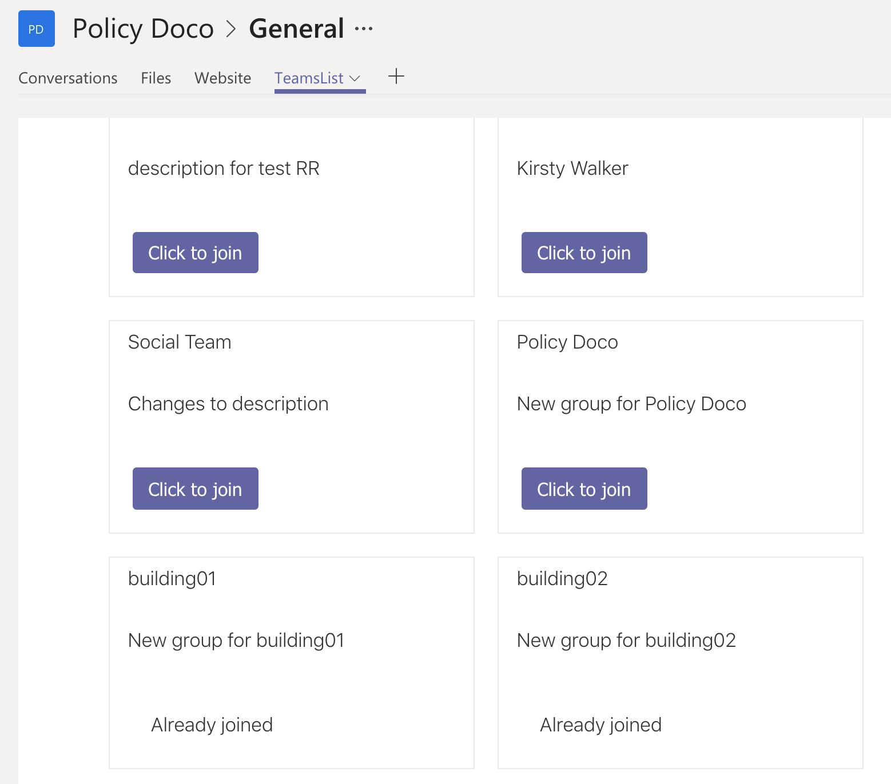
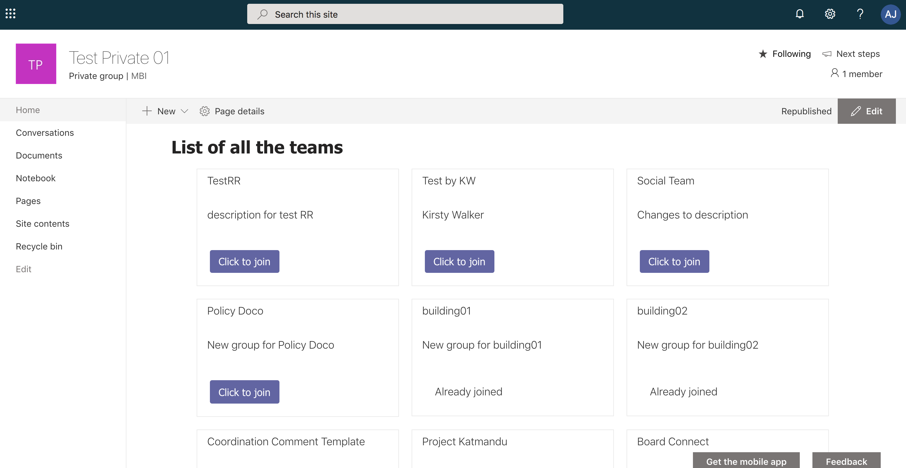

TEAMS DIRECTORY using SPFx & MS Graph
An SPFx take on a list of teams, which can be used as a Teams app.
Published on 6/5/2019
The other day I came across an interesting post on teams directory and deeplinking see original post here and a tweet discussing different approaches for the same or similar use cases was posted- Tweet link.
I knew this was something I can do as a webpart using SPFx and MS Graph which is a completely different approach from the scripting approach in the post. They both serve the same solution to a common requirement and it was fun to have a developer's take on the requirement.
I took the liberty of the long weekend here in Queensland and started off with the webpart for demonstrating the approach.
The SPFX webpart which can also be a Teams Tab, will list out all the teams in a tenant.
It will also hint the user if he is already part of the Team or not.
If he is not a part of the Team, then he will get a link to join the team.
In Teams

In SharePoint

This webpart can be used in SharePoint sites as well as uploaded as an app in Teams via side loading
See complete code here https://github.com/rabwill/teams-list
Feel free to use and share it #sharingiscaring